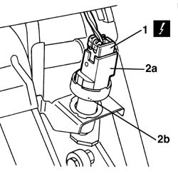
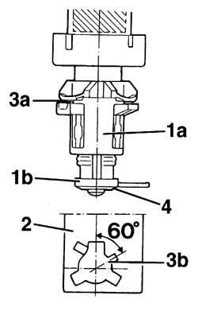

5550D10 brake light switch - r+r
- Path
- Procedures > 55 ELECTRICAL EQUIPMENT > 5550 MANOEUVRING AND WARNING SIGNALS > 5550D brake and reversing lights > 5550D10 brake light switch - r+r
- Kind
- repair procedure (removal / refitting; the operation number is the code)
- Applies to
- all engines; all production periods
- Interactive page
- https://sloeber94.github.io/elrnDB-a156/en/#/3238487
Applies to: all engines; all production periods
 Removing
Removing
 Refitting
Refitting1. Disconnect the electrical connection.
 | Name | Connector |
|---|---|---|
1 | Brake pedal switch |
2. Turn IU+2019 switch (2a) anticlockwisely of about 60° and extract it.
To make the opening easier operate by a wrench on the exagonal section (2b) of the IU+2019 switch.

Applies to: all engines; all production periods
Refitting
Removing1. Prearrange a new switch complete of the bushing (1a) and of the spacer (1b).
2. Keep the brake pressed and insert IU+2019 switch in the coupling position on the flask.
3. Turn IU+2019 switch anticlockwisely of about 60° until you hear the engagement release of the check tooth (3a) in the IU+2019proper seat (3b).
Release the brake pedal until the rest position; pull it ulteriorly towards IU+2019high until Iu+20 switch put itself aumatically as to the bushing.
4. Press the pedal so that you remove the service spacer.
The service spacer set an internal stop tooth free which doesn't make happen any ulterior movement between the switch and the brushing.

Applies to: all engines; all production periods
Test the functionality of the stop lights.